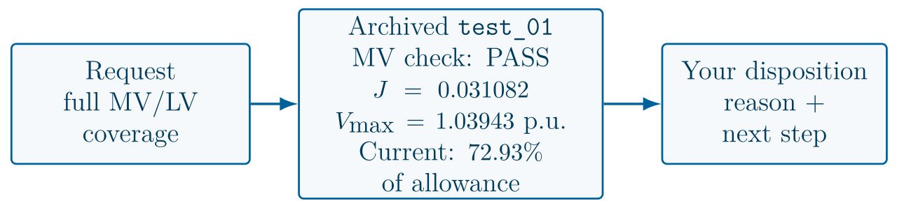
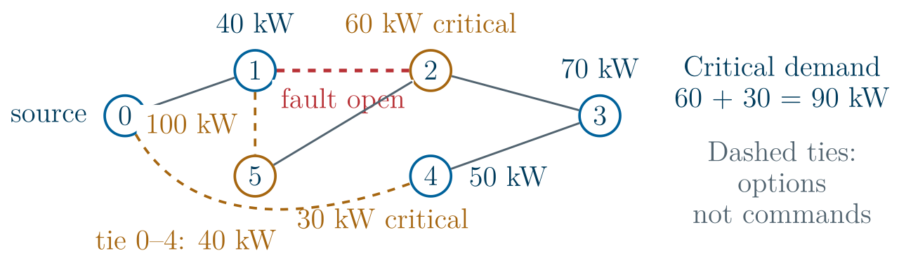

Three Operator Cases: exercises
Four minutes each: read, discuss in pairs, then name a decision and one supporting check.
Exercise: is this packet ready for the requested scope?
Presentation slide 17.

- The request requires full MV/LV coverage. Choose a disposition, identify missing evidence, and state the next permitted step.
Decision, reason and next step:
Exercise: choose the service policy and handle a changed case
Presentation slide 37.

- With tie 0–4 at 40 kW, compare loads 2+5 with loads 3+5 behind the 100 kW tie.
- Add node 1’s 40 kW. Report total and critical service for each choice. The topology changes after verification. Should the old packet be accepted?
Decision, reason and next step:
Exercise: HOLD or propose for operator review?
Presentation slide 54.
- A: J = 3.92022; measurement trust unresolved; no independent trusted replacement.
- B: J = 277.497; no trustworthy replacement is available.
- C: independent trust assumed; current model; all QP checks pass; u = 0.121694. Choose the next step and name one reason.
Decision, reason and next step: